물류관리사-2교시 (2016-07-02 기출문제)
1과목: 보관하역론
1. 항공화물하역의 파렛트 탑재, 운반 및 하역 장비에 해당하지 않는 것은?
- 트랜스포터(Transporter)
- 터그 카(Tug Car)
- 에이프런 컨베이어(Apron Conveyor)
- 돌리(Dolly)
- 리프트 로더(Lift Loader)
(정답률: 57%)

2. 다음에서 설명한 물류센터 입지결정의 방법은?
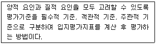
- 총비용 비교법
- 톤-킬로법
- 브라운 & 깁슨법
- 무게 중심법
- 요소분석법
(정답률: 46%)
3. 보관기능에 관한 설명으로 옳지 않은 것은?
- 고객서비스 측면에서 고객의 물품 필요 시 신속히 공급할 수 있다.
- 구매와 생산 측면에서 조달된 원ㆍ부자재를 생산 계획에 따라 공급조정할 수 있다.
- 생산과 판매 측면에서 물품을 판매 시점에 따라 완충하여 공급할 수 있다.
- 마케팅 측면에서 상품의 담보기능을 제공할 수 있다.
- 유통가공 측면에서 상품을 가공함으로써 부가가치를 증대하고 고객요구에 신속히 응대할 수 있다.
(정답률: 36%)
4. '갑'회사의 3개월간 판매실적 정보와 6월의 수요 예측량은 아래 표와 같다. 3개월간 이동평균법(A)과 단순지수평활법(B)을 이용하여 계산한 '갑'회사의 8월의 수요 예측량(개)은? (단, 평활상수(α)는 0.3, 답은 소수점 첫째자리에서 반올림한다.)
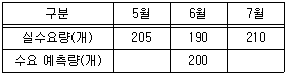
- A : 200, B : 201
- A : 200, B : 204
- A : 200, B : 2⑤
- A : 202, B : 201
- A : 202, B : 2⑤
(정답률: 46%)
5. 물류센터에 관한 설명으로 옳지 않은 것은?
- 적정한 수준의 재고를 유지할 수 있다.
- 신속 정확한 배송으로 고객서비스를 향상시킨다.
- 교차 및 중복수송이 증가한다.
- 상물 분리에 의한 물류효율화를 실현할 수 있다.
- 유통가공이 가능하다.
(정답률: 52%)
6. 철도컨테이너 하역방식에 관한 설명으로 옳은 것은?
- TOFC(Trailer On Flat Car) 방식은 회전판을 이용하여 컨테이너를 90도 회전시켜 고정시키는 방식이다.
- 피기백(Piggy back) 방식은 화물적재 단위가 클수록 유리하고 리치 스태커(Reach Stacker)를 사용하는 방식이다.
- 캥거루 방식은 장거리 정기노선에 유리한 COFC(Container On Flat Car) 방식의 일종이다.
- 프레이트 라이너(Freight liner) 방식은 대형 컨테이너를 정기적 급행으로 운행하고 공로와 철도를 포함한 문전 운송이 가능한 방식이다.
- COFC(Container On Flat Car) 방식은 트레일러를 적재하는 방식이다.
(정답률: 60%)
7. 창고 운영형태에 관한 설명으로 옳지 않은 것은?
- 자가창고: 수요 변동에 탄력적으로 대응하기 용이하다.
- 영업창고: 비용지출을 명확하게 관리할 수 있다.
- 임대창고: 시장환경 변화에 따라 보관장소를 탄력적으로 운영하기 어렵다.
- 공공창고: 사용목적에 따라 사용자의 제한이 있다.
- 보세창고: 보관기간에 대한 제한이 있다.
(정답률: 26%)
8. 다음의 보기에서 설명하는 내용으로 옳은 것을 모두 고른 것은?
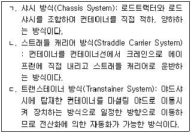
- ㄱ
- ㄴ
- ㄱ, ㄴ
- ㄱ, ㄷ
- ㄱ, ㄴ, ㄷ
(정답률: 42%)
9. 다음의 보관시스템의 주요 형태를 순서대로 옳게 나열한 것은?
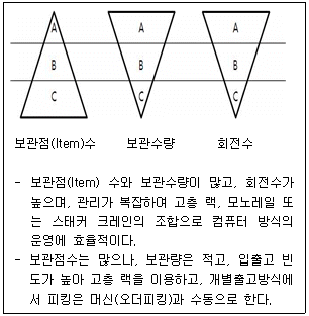
- A-C-A, C-A-A
- A-C-A, C-C-A
- C-A-A, C-C-A
- C-A-A, C-C-C
- C-A-A, B-B-B
(정답률: 52%)
10. 임대 파렛트에 관한 설명으로 옳지 않은 것은?
- 표준 파렛트 도입이 가능하다.
- 초기 고정투자비가 적게 든다.
- 비수기의 양적 조절이 가능하다.
- 파렛트 풀 시스템 도입을 고려할 수 있다.
- 업체간 이동시 회수가 용이하다.
(정답률: 45%)
11. 창고의 입지 선정 시 고려해야 할 사항으로 옳지 않은 것은?
- 물품(Product)
- 품질(Quality)
- 경로(Route)
- 서비스(Service)
- 시간(Time)
(정답률: 59%)
12. 물류업체 A회사 창고의 일일 제품출하량은 평균 4개, 표준편차 1개인 정규분포를 따른다. 제품 주문 후 창고에 보충되는 조달기간은 2일, 안전계수는 2이다. 만약, 일일 제품출하량이 평균 2배, 표준편차 2배로 늘었을 경우 재주문점은 기존 재주문점에 비해 어떻게 변하는가? (단, √2 = 1.414 이다.)
- 50% 감소
- 41% 감소
- 변화없음
- 41% 증가
- 100% 증가
(정답률: 38%)
13. 다음 표는 A회사의 공장과 수요지의 위치를 나타낸 것이다. 수요량은 수요지 1이 4,000 box/월, 수요지 2는 2,000 box/월, 수요지 3은 3,000 box/월이다. 무게 중심법을 이용한 신규 물류센터의 최적입지 좌표(X, Y)는? (단, 소수점 둘째자리에서 반올림한다.)
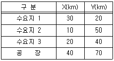
- X = 31.1, Y = 51.7
- X = 31.1, Y = 54.2
- X = 32.5, Y = 51.7
- X = 32.5, Y = 54.2
- X = 33.1, Y = 54.7
(정답률: 49%)
14. 물류센터를 설계할 때 고려해야 할 기본방침을 모두 고른 것은?
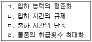
- ㄱ, ㄴ
- ㄷ, ㄹ
- ㄱ, ㄴ, ㄷ
- ㄴ, ㄷ, ㄹ
- ㄱ, ㄴ, ㄷ, ㄹ
(정답률: 49%)
15. 하역 요소에 관한 설명으로 옳지 않는 것은?
- 상차(Loading): 운송기기 등에 물건을 싣는 것을 말한다.
- 적재(Stacking): 보관시설 등의 정해진 위치에 정해진 형태로 물건을 쌓는 것을 말한다.
- 디베닝(Devanning): 컨테이너에서 물건을 내리는 것을 말한다.
- 재작업(Rehandling): 컨테이너 내의 물건이 흔들리지 않도록 다시 묶는 것을 말한다.
- 분류(Sorting): 물건을 품종별, 발송지별, 고객별로 나누는 것을 말한다.
(정답률: 56%)
16. 다음 조건에 맞는 물류센터의 효율적인 하역작업에 필요한 최소 지게차 수는?
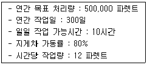
- 14대
- 16대
- 18대
- 20대
- 22대
(정답률: 49%)
17. 다음 설명과 일치하는 랙(Rack)의 종류로 옳은 것은?
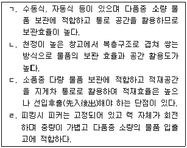
- ㄱ: 적층랙, ㄴ: 모빌랙, ㄷ: 드라이브인랙, ㄹ: 캐러셀랙
- ㄱ: 모빌랙, ㄴ: 적층랙, ㄷ: 드라이브스루랙, ㄹ: 캐러셀랙
- ㄱ: 모빌랙, ㄴ: 캐러셀랙, ㄷ: 적층랙, ㄹ: 드라이브인랙
- ㄱ: 모빌랙, ㄴ: 적층랙, ㄷ: 드라이브인랙, ㄹ: 캐러셀랙
- ㄱ: 적층랙, ㄴ: 캐러셀랙, ㄷ: 모빌랙, ㄹ: 드라이브인랙
(정답률: 50%)
18. 하역 원칙에 관한 설명으로 옳은 것은?
- 운반거리를 최대한 길게 해야 한다.
- 운반활성화 지수를 최소화하여야 한다.
- 화물을 즉시 피킹할 수 있도록 낱개 화물로 운반해야 한다.
- 화물은 유연하게 작업될 수 있도록 작업자가 직접 손으로 하역할 수 있어야 한다.
- 각 하역활동을 시스템 전체 균형에 맞도록 고려하여야 한다.
(정답률: 56%)
19. STO(Stock To Operator)에 해당되는 설비(또는 장비)가 아닌 것은?
- Carousel
- Kiva System
- Mini-load AS/RS
- Mobile Rack
- Automatic Dispenser
(정답률: 18%)
20. 자동창고시스템(AS/RS: Automated Storage and Retrieval System)의 S/R(Storage and Retrieval)장비는 단일명령(Single Command)과 이중명령(Dual Command) 처리방식으로 수행된다. 다음의 운영조건에서 S/R장비의 이중명령 횟수(A) 및 평균가동률(B)은?
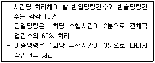
- A : 3회, B : 60%
- A : 6회, B : 60%
- A : 6회, B : 90%
- A : 12회, B : 60%
- A : 12회, B : 90%
(정답률: 40%)
21. 4가지 제품(A~D)을 보관하는 창고의 기간별 파렛트 저장소요공간이 다음 표와 같다. 현재 지정위치저장(Dedicated storage)방식으로 창고의 저장소요공간을 산정하였다. 만약, 임의위치저장(Randomized storage)방식으로 산정한다면 창고의 저장소요공간은 지정위치저장방식의 산정값에 비해 어떻게 변하는가? (단, 소수점 셋째자리에서 반올림한다.)
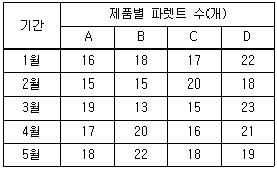
- 8% 감소
- 5% 감소
- 변화없음
- 5% 증가
- 9% 증가
(정답률: 37%)
22. 다음의 화인 표시방법에 관한 설명으로 옳지 않은 것을 모두 고른 것은?
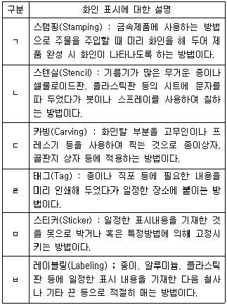
- ㄱ, ㄷ
- ㄷ, ㄹ
- ㄱ, ㄹ, ㅁ
- ㄴ, ㄷ, ㄹ
- ㄱ, ㄷ, ㄹ, ㅂ
(정답률: 45%)
23. 물류업체 A회사는 공급업체로부터 제품을 배달받는데 5일이 걸린다. 연평균 운송재고(Transportation inventory)가 130개, 1년을 365일이라 할 경우 연간수요량은?
- 8,850개
- 9,060개
- 9,280개
- 9,490개
- 10,000개
(정답률: 56%)
24. 다음 집합포장방법에 관한 설명으로 옳지 않은 것은?
- 밴드결속: 종이, 플라스틱, 나일론 및 금속밴드를 이용하며, 코너 변형을 막기 위해 코너패드가 보호재로 사용된다.
- 테이핑(Taping): 용기의 표면에 접착테이프 등을 사용하며, 접착테이프 사용 시 용기 표면이 손상될 수 있다.
- 슬리브(Sleeve): 보통 필름으로 슬리브를 만들어 4개 측면을 감싸는 방법이다.
- 쉬링크(Shrink): 깨지기 쉬운 화물을 위ㆍ아래 틀로 고정하는 방법으로 밴드를 사용한다.
- 스트레치(Stretch): 스트레치 필름을 사용하여 필름의 접착성을 이용하는 것으로 대략 3겹 정도로 감싸는 방법이다.
(정답률: 33%)
25. 다음 중 자동분류장치의 종류에 관한 설명으로 옳은 것을 모두 고른 것은?
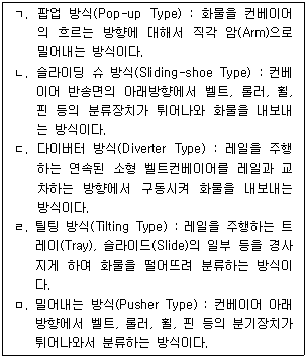
- ㄱ, ㄷ
- ㄴ, ㄹ
- ㄱ, ㄹ, ㅁ
- ㄴ, ㄷ, ㄹ
- ㄴ, ㄷ, ㄹ, ㅁ
(정답률: 38%)
26. 창고내 로케이션(Location) 관리에 관한 설명으로 옳지 않은 것은?
- 로케이션(Location): 배치된 지역 및 위치에 주소를 부여하는 것을 말한다.
- 고정 로케이션(Fixed Location): 선반 번호별로 보관하는 품목의 위치를 고정하여 보관하는 방법이다.
- 프리 로케이션(Free Location): 품목과 보관하는 랙 상호간에 특별한 연관관계를 정하지 않는 보관방법이다.
- 구역 로케이션(Zone Location): 특정 품목군을 일정한 범위 내로 한정하여 보관하고, 그 범위 내에서 특정 위치를 고정하는 방법이다.
- 고정 로케이션(Fixed Location): 수작업으로 관리하는 경우가 많고, 선반 꼬리표 방식과 병행해서 사용하는 경우도 있다.
(정답률: 32%)
27. 창고관리시스템(WMS: Warehouse Management System)에 관한 설명으로 옳지 않은 것은?
- WMS는 입고관리, 위치관리, 재고관리, 출고관리 등의 기능을 수행한다.
- WMS를 활용하면 재고 정확도, 공간과 설비의 활용도가 향상된다.
- WMS가 유통중심형 물류시설을 위한 차별화 전략의 핵심요인으로 등장했다.
- WMS는 물류센터의 시설운영 기기 등의 제어가 가능하다.
- WMS는 다른 시스템과의 원활한 인터페이스가 제한적이므로 실시간 정보관리에 한계가 있다.
(정답률: 55%)
28. 생산업체 A공장의 제품생산능력은 수요량의 2배이다. 자동화 라인 도입으로 제품생산능력이 수요량의 4배가 될 경우 경제적 생산량(EPQ: Economic Production Quantity)은 기존 EPQ에 비해 어떻게 변하는가? (단, 나머지 조건은 모두 동일하다고 가정하고, √2 = 1.414, √3 = 1.732 이며, 답은 소수점 셋째자리에서 반올림한다.)
- 18% 감소
- 변화없음
- 18% 증가
- 41% 증가
- 100% 증가
(정답률: 18%)
29. 다음의 내용에 맞는 물류기기는?
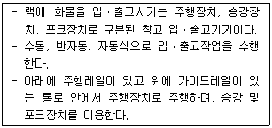
- 오버헤드 크레인(Overhead Crane)
- 트레버서(Traverser)
- 스태커 크레인(Stacker Crane)
- 데릭(Derrick)
- 갠트리 크레인(Gantry Crane)
(정답률: 42%)
30. 파렛타이저(Palletizer)에 관한 설명으로 옳지 않은 것은?
- 기계식 파렛타이저는 캐리지, 클램프 또는 푸셔 등의 적재장치를 사용하여 파렛트에 물품을 자동으로 적재한다.
- 로봇식 파렛타이저는 산업용 로봇에 매니퓰레이터(Manipulator)를 장착하여 물품을 자동 적재하며, 저속처리가 가능하다.
- 고상식 파렛타이저는 높은 위치에 적재장치를 구비하고 일정한 적재위치에서 파렛트를 내리면서 물품을 적재하는 방식으로 고속처리가 가능하다.
- 저상식 파렛타이저는 파렛트를 낮은 장소에 놓고 적재장치를 오르내리면서 물품을 적재하며, 파렛트 적재 패턴의 변경이 용이하다.
- 파렛타이저의 표준화 대상으로는 용어 및 기호, 안전장치, 호환성 등이 있다.
(정답률: 20%)
31. 다음에서 설명하는 운반ㆍ하역 기기는?
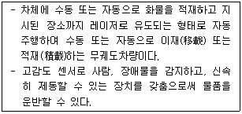
- 파렛트 트럭(Pallet Truck)
- 핸드 리프터(Hand Lifter)
- 무인반송차(Automatic Guided Vehicle)
- 트롤리 컨베이어(Trolly Conveyor)
- 체인 레버 호이스트(Chain Lever Hoist)
(정답률: 55%)
32. 파렛트(Pallet)의 종류와 설명으로 옳지 않은 것은?
- 롤 상자형 파렛트(Roll Box Pallet): 받침대 밑면에 바퀴가 달리고 상부구조가 박스인 파렛트로 최근에는 배송용으로 많이 사용된다.
- 시트 파렛트(Sheet Pallet): 1회용 파렛트로 Push-Pull 장치를 부착한 지게차로 취급된다.
- 탱크 파렛트(Tank Pallet): 주로 액체 취급 시 사용되고 밀폐를 위한 뚜껑을 가지며 상부 또는 하부에 개폐장치가 있다.
- 플래턴 파렛트(Platen Pallet): 핸드리프트로 하역할 수 있도록 만들어진 단면형 파렛트이다.
- 사일로 파렛트(Silo Pallet): 주로 분말체를 담는 데 사용되며 밀폐를 위한 뚜껑을 가지고 하부에 개폐장치가 있다.
(정답률: 36%)
33. 창고내 시설 및 물류동선 배치 레이아웃의 기본원칙에 관한 설명으로 옳지 않은 것은?
- 회전성의 원칙: 물품, 통로, 운반기기 및 사람 등의 흐름방향을 곧바로 흐르도록 하는 것을 말한다.
- 역행교차 없애기 원칙: 물품, 운반기기 및 사람의 흐름배치는 서로 교차하거나 역주행이 되지 않도록 하는 것을 말한다.
- 취급 횟수 최소화의 원칙: 보관효율을 높이기 위하여 임시보관 취급과 같은 동작이나 업무를 줄이는 것을 말한다.
- 중력이용의 원칙: 자체 중력을 이용하여 위에서 아래로 움직이도록 하고 무거운 것은 하단에 배치하는 것을 말한다.
- 모듈화의 원칙: 물류동선의 패턴, 복도 및 랙 방향 등의 설계를 통해 작업 및 보관 효율을 높이는 것을 말한다.
(정답률: 47%)
34. 어느 신문판매점에서 신문을 주문하려 한다. 주문은 일일 1회만 주문이 가능하고 10부 단위로 주문해야 한다. 신문 1부의 판매가격은 630원, 구매가격은 500원, 판매하지 못한 신문은 1부당 100원을 받고 처분된다. 합리적 주문량과 이 때의 서비스수준을 순서대로 옳게 나열한 것은? (단, 신문판매점이 추정한 수요분포는 다음과 같다.)
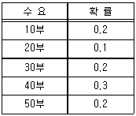
- 10부, 20%
- 20부, 24.5%
- 20부, 75.5%
- 40부, 24.5%
- 40부, 75.5%
(정답률: 22%)
35. 물류업체 A사의 회당 주문비용은 2배, 단위당 연간 재고유지비용은 4배로 변하였다면 경제적 주문량(EOQ: Economic Order Quantity)모형에서 연간 주문비용은 기존의 연간 주문비용에 비해 어떻게 변하는가? (단, 나머지 조건은 모두 동일하고, √2 = 1.414 이며, 답은 소수점 셋째자리에서 반올림한다.)
- 41% 감소
- 변화없음
- 41% 증가
- 100% 증가
- 183% 증가
(정답률: 8%)
36. 일반 지게차를 이용하여 파렛트를 보관할 때 어태치먼트(Attachment)가 필요한 랙 시설은?
- Double Deep Rack
- Pallet Flow Rack
- Drive-In Rack
- Push-Back Rack
- Drive-Through Rack
(정답률: 40%)
37. 자동화창고에 관한 설명으로 옳지 않은 것은?
- 좁은 공간에서 수직으로 높게 보관할 수 있어 많은 보관물을 효과적으로 보관할 수 있다.
- 재고관리 및 입ㆍ출고관리가 용이하다.
- 물품의 흐름보다는 보관에 중점을 두고 설계되어야 한다.
- 다품종 소량주문 대응에 용이하다.
- 노동집약적인 보관활동을 기계화하여 창고 생산성과 효율성을 개선할 수 있다.
(정답률: 58%)
38. 연속된 5개의 화물분류 공정별(A~E) 공정시간은 아래 표와 같다. 이 중 공정 1개의 공정시간을 변경하였을 때 공정효율(Balance Efficiency)이 80%가 되는 공정명과 공정시간은?
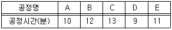
- 공정 A, 9분
- 공정 B, 10분
- 공정 C, 11분
- 공정 D, 8분
- 공정 E, 8분
(정답률: 30%)
39. 다음 재고관리법의 기본이론에 관한 설명으로 옳은 것은? (단, 수요와 공급은 불확실하다.)
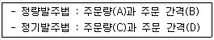
- A는 변동이고, B는 고정이다.
- A는 변동이고, C는 변동이다.
- A는 고정이고, D는 고정이다.
- B는 변동이고, C는 고정이다.
- C는 변동이고, D는 변동이다.
(정답률: 58%)
40. 크로스벨트(Cross-belt) 소팅 컨베이어에 관한 설명으로 옳지 않은 것은?
- 레일 위를 주행하는 연속된 캐리어를 지니고 있다.
- 각 캐리어는 소형 컨베이어를 장착하고 있다.
- 캐리어를 경사지게 하여 화물을 분류한다.
- 어패럴, 화장품, 의약품, 서적 등의 분류에 이용한다.
- 고속 분류기의 일종이다.
(정답률: 43%)
2과목: 물류관련법규
41. 물류정책기본법령상 단위물류정보망 전담기관으로 지정될 수 없는 자는?
- 「인천국제공항공사법」에 따른 인천국제공항공사
- 「한국토지주택공사법」에 따른 한국토지주택공사
- 「상법」에 따른 자본금이 1억원인 주식회사
- 「한국도로공사법」에 따른 한국도로공사
- 「항만공사법」에 따른 항만공사
(정답률: 69%)
42. 물류정책기본법령상 국가물류정책에 관한 주요 사항을 심의하기 위하여 국토교통부장관 소속으로 두는 국가물류정책위원회의 심의ㆍ조정 사항에 해당하지 않는 것은?
- 국가물류체계의 효율화에 관한 중요 정책 사항
- 국제물류의 촉진ㆍ지원에 관한 중요 정책 사항
- 물류시설의 종합적인 개발계획의 수립에 관한 사항
- 환경친화적 물류활동의 규제에 관한 중요 정책 사항
- 물류보안에 관한 중요 정책 사항
(정답률: 38%)
43. 물류정책기본법령상 국가물류통합정보센터운영자의 물류정보 공개에 관한 설명으로 옳지 않은 것은?
- 정보처리장치의 파일에 기록되어 있는 물류정보의 보관기간은 1년으로 한다.
- 국가의 안전보장에 위해가 없고 기업의 영업비밀을 침해하지 아니하는 경우, 법원의 제출명령에 따른 경우에는 물류정보를 공개할 수 있다.
- 국가의 안전보장에 위해가 없고 기업의 영업비밀을 침해하지 아니하는 경우, 다른 법률에 따라 공개하도록 되어 있는 경우에는 물류정보를 공개할 수 있다.
- 대통령령으로 정하는 경우를 제외하고는 물류정보를 공개하여서는 아니 된다.
- 물류정보를 공개하려고 하는 때에는 미리 대통령령으로 정하는 이해관계인의 동의를 받아야 한다.
(정답률: 74%)
44. 물류정책기본법령상 특별시장 및 광역시장이 지역물류정책의 기본방향을 설정하기 위하여 5년마다 수립하는 10년 단위의 지역물류기본계획에 포함되어야 할 사항이 아닌 것은?
- 지역의 물류시설ㆍ장비의 수급ㆍ배치 및 투자 우선순위에 관한 사항
- 연계물류체계의 구축 및 개선에 관한 사항
- 지역 물류산업의 경쟁력 강화에 관한 사항
- 지역 물류인력의 양성 및 물류기술의 개발ㆍ보급에 관한 사항
- 지역의 물류 공동화 및 정보화 등 물류체계의 효율화에 관한 사항
(정답률: 52%)
45. 물류정책기본법령상 국제물류주선업자가 사망하여 상속인이 국제물류주선업의 등록에 따른 권리ㆍ의무를 승계하는 경우 사업승계신고서에 첨부하여야 할 서류를 모두 고른 것은?
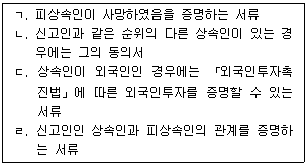
- ㄱ, ㄴ
- ㄴ, ㄹ
- ㄱ, ㄴ, ㄷ
- ㄱ, ㄴ, ㄹ
- ㄱ, ㄷ, ㄹ
(정답률: 52%)
46. 물류정책기본법령상 국토교통부장관 또는 해양수산부장관이 하는 소관 인증우수물류기업의 인증 취소에 관한 설명으로 옳지 않은 것은?
- 거짓이나 그 밖의 부정한 방법으로 인증을 받은 경우에는 그 인증을 취소할 수 있다.
- 국토교통부장관 또는 해양수산부장관이 실시하는 인증우수물류기업 인증요건의 유지여부 점검을 정당한 사유 없이 3회 이상 거부한 경우에는 그 인증을 취소할 수 있다.
- 국토교통부와 해양수산부의 공동부령으로 정한 우수물류기업의 인증기준에 맞지 아니하게 된 경우에는 그 인증을 취소할 수 있다.
- 다른 사람에게 자기의 성명 또는 상호를 사용하여 영업을 하게 한 때에는 그 인증을 취소할 수 있다.
- 인증우수물류기업은 우수물류기업의 인증이 취소된 경우에는 인증마크의 사용을 중지하여야 한다.
(정답률: 55%)
47. 물류정책기본법령상 국토교통부령으로 정하는 바에 따라 국토교통부장관에게 등록한 국제물류주선업의 변경등록 사항에 해당하지 않는 것은?
- 상호
- 자본금 또는 자산평가액
- 사업자등록번호
- 주사무소 소재지
- 국적 또는 소속 국가명
(정답률: 42%)
48. 물류정책기본법령상 국토교통부장관ㆍ해양수산부장관 또는 시ㆍ도지사가 물류기업 및 화주기업에 대하여 권고ㆍ지원할 수 있는 환경친화적 운송수단으로의 전환 지원 대상에 해당하지 않는 것은?
- 화물자동차ㆍ철도차량ㆍ선박ㆍ항공기 등의 배출가스를 저감하는 경우
- 배출가스를 저감할 수 있는 운송수단으로 전환하는 경우
- 환경친화적 연료를 사용하는 운송수단으로 전환하는 경우
- 환경친화적 연료를 사용하는 운송수단으로 전환하기 위한 시설ㆍ장비투자를 하는 경우
- 환경친화적 물류보관시스템을 도입하는 경우
(정답률: 55%)
49. 물류시설의 개발 및 운영에 관한 법령상 물류단지의 개발 및 운영에 관한 설명으로 옳은 것은?
- 경기도 용인시에 소재하는 규모 200만 제곱미터의 일반물류단지는 경기도지사가 지정한다.
- 「한국철도공사법」에 따른 한국철도공사는 물류단지개발사업의 시행자로 지정받을 수 있다.
- 개발이 완료된 물류단지가 준공된 지 20년 이상 된 것으로서 주변상황과 물류 산업여건이 변화되어 물류단지재정비사업을 하더라도 물류단지 기능 수행이 어려울 것으로 판단되는 경우, 물류단지지정권자는 물류단지 지정의 전부 또는 일부를 해제할 수 있다.
- 물류단지 안에서 건축물의 건축 등 이 법령상 허가를 받아야 하는 행위제한 사항에 관하여 물류단지의 지정 및 고시 당시 이미 관계 법령에 따라 허가를 받은 경우에는 이 법령에 따른 허가를 받은 것으로 본다.
- 시ㆍ도지사는 일반물류단지를 지정하려는 때에는 일반물류단지개발계획을 수립하여 관계 중앙행정기관의 장과 협의한 후「물류정책기본법」상 물류시설분과위원회의 심의를 거쳐야 한다.
(정답률: 50%)
50. 물류시설의 개발 및 운영에 관한 법령상 복합물류터미널사업자에 관한 설명으로 옳고(○), 그름(×)이 순서대로 바르게 나열된 것은?
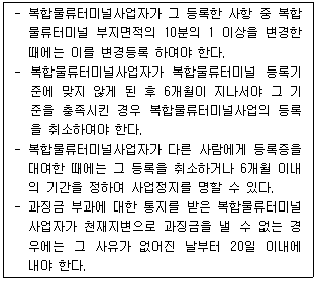
- ○, ○, ○, ○
- ○, ○, ×, ○
- ○, ×, ×, ×
- ×, ×, ○, ×
- ×, ×, ×, ×
(정답률: 63%)
51. 물류시설의 개발 및 운영에 관한 법령상 용어의 정의에 관한 설명으로 옳은 것은?
- '물류터미널'이란 화물의 저장ㆍ관리, 집화ㆍ배송 및 수급조정 등을 위한 보관시설ㆍ보관장소 또는 이와 관련된 하역ㆍ분류ㆍ포장ㆍ상표부착 등에 필요한 기능을 갖춘 시설을 말한다.
- 화물의 집화ㆍ하역과 관련된 가공ㆍ조립시설로 그 시설의 바닥면적 합계가 물류터미널의 전체 바닥면적 합계의 3분의 1인 경우 '물류터미널'에 해당한다.
- 물류단지시설의 운영을 효율적으로 지원하기 위하여 물류단지 안에 설치되는 시설로 입주기업체 및 지원기관에서 발생하는 폐기물의 재활용시설은 '지원시설'에 해당한다.
- 세 종류의 운송수단 간 연계운송을 할 수 있는 규모 및 시설을 갖춘 물류터미널사업은 '일반물류터미널사업'에 해당한다.
- 물류단지 안에 설치되는 시설로「철도사업법」에 따른 철도사업자가 그 사업에 사용하는 화물운송시설은 '물류단지시설'에 해당하지 않는다.
(정답률: 38%)
52. 물류시설의 개발 및 운영에 관한 법령상 물류시설개발종합계획에 관한 설명으로 옳지 않은 것은?
- 용수ㆍ에너지ㆍ통신시설 등 기반시설에 관한 사항은 물류시설개발종합계획에 포함되어야 한다.
- 국토교통부장관은 물류시설개발종합계획을 수립하거나 변경한 때에는 이를 관보에 고시하여야 한다.
- 관계 행정기관의 장은 필요한 경우 국토교통부장관에게 물류시설개발종합계획을 변경하도록 요청할 수 있다.
- 국토교통부장관은 물류시설개발종합계획과 다른 행정기관이 직접 지정ㆍ개발하려는 물류시설 개발계획이 상충되거나 중복된다고 인정하는 경우, 물류시설개발 종합계획을 변경하여야 한다.
- 물류시설개발종합계획 중 물류시설의 수요ㆍ공급계획을 물류시설별 물류시설 용지면적의 100분의 20만큼 변경하는 것은 「물류정책기본법」상 물류시설분과 심의위원회의 심의를 거쳐야 하는 사항이다.
(정답률: 40%)
53. 물류시설의 개발 및 운영에 관한 법령상 물류창고업에 관한 설명으로 옳지 않은 것은?
- 국가는 물류창고업자가 물류창고업의 업종전환을 위한 국내동향 조사ㆍ연구를 하는 경우 자금의 일부를 보조 또는 융자할 수 있다.
- 「관세법」에 따른 보세창고의 설치ㆍ운영에 관한 영업의 현황을 관리하는 행정기관은 그 보관업의 허가ㆍ변경허가, 등록ㆍ변경등록 등으로 그 현황이 변경될 경우에는 국토교통부장관 또는 해양수산부장관에게 통보하여야 한다.
- 보조금 또는 융자금은 보조 또는 융자받은 목적 외의 용도로 사용하여서는 아니 된다.
- 지방자치단체는 물류창고업자 및 관련 종사자에 대한 교육ㆍ훈련 사업을 위하여 필요하다고 인정하면 자금의 일부를 보조 또는 융자할 수 있다.
- 물류창고업자는 등록사항 중 물류창고 면적의 100분의 10을 감소시키려는 경우 물류창고업의 변경등록을 하여야 한다.
(정답률: 25%)
54. 물류시설의 개발 및 운영에 관한 법령상 징역 또는 벌금 부과대상이 아닌 것은?
- 등록을 하지 아니하고 복합물류터미널사업을 경영한 자
- 거짓으로 물류단지개발실시계획의 승인을 받은 자
- 복합물류터미널의 공사시행인가를 받지 아니하고 공사를 시행한 자
- 다른 사람에게 자기의 성명 또는 상호를 사용하여 사업을 하게 한 복합물류터미널 사업자
- 물류창고업 등록 요건에 해당하는 물류창고를 갖추고 「유해화학물질 관리법」에 따른 유독물 보관ㆍ저장업의 용도로만 사용하며 해당 법률에 따라 영업허가를 받았으나「물류시설의 개발 및 운영에 관한 법률」에 따른 등록을 하지 아니하고 물류창고업을 영위한 자
(정답률: 69%)
55. 물류시설의 개발 및 운영에 관한 법령상 물류단지개발특별회계에 관한 내용으로 ( ) 안에 들어갈 사항이 순서대로 바르게 나열된 것은?
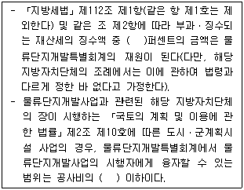
- 10, 3분의 1
- 10, 2분의 1
- 20, 3분의 1
- 20, 2분의 1
- 30, 2분의 1
(정답률: 47%)
56. 물류시설의 개발 및 운영에 관한 법령상 물류단지개발사업에 관한 설명으로 옳지 않은 것은?
- 물류단지개발사업의 시행자인 「민법」에 따라 설립된 법인은 사업대상 토지 면적의 2분의 1 이상을 매입하여야 토지등을 수용할 수 있다.
- 물류단지개발사업의 일부를 국가ㆍ지방자치단체 또는 공공기관에 위탁하여 시행하려는 경우, 위험부담에 관한 사항은 이를 위탁받아 시행할 자와 협의하여야 한다.
- 물류단지개발사업의 시행자인「지방공기업법」에 따른 지방공사는 물류단지개발사업에 필요한 토지등을 수용할 수 있다.
- 물류단지개발사업의 시행자는 물류단지개발사업 중 공유수면의 매립에 관한 사항을 국가에 위탁하여 시행할 수 있다.
- 일반물류단지개발사업의 시행자는 일반물류단지개발계획에 포함되어야 하는 사항이다.
(정답률: 47%)
57. 화물자동차 운수사업법령상 화물자동차 운송사업에서 화주가 밴형 화물자동차에 함께 탈 때의 화물로서 그 중량, 용적, 형상 등이 여객자동차 운송사업용 자동차에 싣기에 부적합한 기준에 해당하는 것은?
- 화주 1명당 화물의 중량이 15킬로그램 이상인 화물
- 화주 1명당 화물의 용적이 3만 세제곱센티미터 이상인 화물
- 불결하거나 악취가 나지 않는 농산물ㆍ수산물 또는 축산물
- 기계ㆍ기구류 등 공산품
- 타인에게 혐오감을 주는 예술작품
(정답률: 48%)
58. 화물자동차 운수사업법령상 적재물배상 책임보험 또는 공제(이하 '적재물배상보험등'이라 한다)의 가입등에 관한 설명으로 옳지 않은 것은?
- 「대기환경보전법」에 따른 배출가스저감장치를 차체에 부착함에 따라 총중량이 10톤 이상이 된 화물자동차 중 최대 적재량이 5톤 미만인 일반형 화물자동차는 적재물배상보험등의 의무 가입 대상차량이 아니다.
- 「보험업법」에 따른 보험회사(적재물배상책임 공제사업자를 포함하며, 이하 '보험회사등'이라 한다)는 적재물배상보험등에 가입하여야 하는 자(이하 '보험등 의무가입자'라 한다)가 적재물배상보험등에 가입하려고 하면 예외적인 사유가 있는 경우 외에는 적재물배상보험등의 계약(이하 '책임보험계약등'이라 한다) 체결을 거부할 수 없다.
- 보험등 의무가입자 및 보험회사등은 화물자동차 운송사업을 휴업하거나 폐업하는 등 예외적인 경우를 제외하고 책임보험계약등의 전부 또는 일부를 해제하거나 해지 하여서는 아니 된다.
- 보험등 의무가입자에 해당하는 이사화물운송주선사업자는 각 화물자동차별로 사고 건당 500만원 이상의 금액을 지급할 책임을 지는 적재물배상보험등에 가입하여야 한다.
- 보험회사등은 자기와 책임보험계약등을 체결한 보험등 의무가입자가 그 계약이 끝난 후 새로운 계약을 체결하지 하니하면 그 사실을 지체 없이 국토교통부장관에게 알려야 한다.
(정답률: 32%)
59. 화물자동차 운수사업법령상 화물자동차 운송사업의 허가취소, 사업정지처분 또는 감차조치 명령을 함에 있어 공공복리의 침해 정도등을 고려하여 가중하거나 경감할 수 있는 기준에 해당하지 않는 것은?
- 사업 일부정지의 경우 처분기준 일수의 2분의 1 범위에서 그 기간을 늘리거나 줄이되, 늘리는 경우에도 그 기간은 3개월을 초과하지 아니 할 것
- 부정한 방법에 의한 사업허가 또는 허가의 결격사유에 해당하는 경우 이외의 원인에 따른 허가취소를 경감하는 경우에는 2대 이상의 화물자동차에 대한 감차조치로 할 것
- 2대 이상의 화물자동차에 대한 감차조치를 가중하는 경우에는 허가취소로 할 것
- 위반차량 감차조치를 경감하는 경우에는 90일 이상의 위반차량 운행정지로 할 것
- 2대 이상의 화물자동차에 대한 감차조치를 경감하는 경우에는 90일 이상의 사업전부정지 또는 사업 일부정지로 할 것
(정답률: 35%)
60. 화물자동차 운수사업법령상 국토교통부장관이 수립하는 화물자동차 휴게소 확충 종합계획(이하 '휴게소 종합계획'이라 한다)에 관한 설명으로 옳지 않은 것은?
- 휴게소 종합계획은 5년을 단위로 하여 수립한다.
- 휴게소 종합계획에는 화물자동차 교통량의 연구분석 및 변동예측에 관한 사항이 포함되어야 한다.
- 국토교통부장관이 화물자동차 휴게소의 기능 개선 및 효율화에 관한 사항을 변경하려는 경우에는 미리 시ㆍ도지사의 의견을 듣고 관계 중앙행정기관의 장과 협의하여야 한다.
- 국토교통부장관이 휴게소 종합계획을 수립하거나 변경한 때에는 이를 관보에 고시하여야 한다.
- 화물자동차 휴게소 건설사업을 시행하려는 자는 필요한 경우 국토교통부장관에게 휴게소 종합계획을 변경하도록 요청할 수 있다.
(정답률: 44%)
61. 화물자동차 운수사업법령상 화물의 멸실이나 훼손 등으로 발생한 운송사업자의 책임에 관한 설명으로 옳지 않은 것은?
- 화물의 멸실로 발생한 운송사업자의 손해배상 책임을 적용할 때 화물이 인도 기한이 지난 후 3개월 이내에 인도되지 아니하면 그 화물은 멸실된 것으로 본다.
- 국토교통부장관은 멸실이나 훼손 등으로 발생한 운송사업자의 손해배상에 관하여 화주가 요청하면 이에 관한 분쟁을 조정할 수 있다.
- 국토교통부장관은 분쟁조정 업무를 「소비자기본법」에 따른 한국소비자원 또는 같은 법에 따라 등록한 소비자단체에 위탁할 수 있다.
- 국토교통부장관은 화주가 분쟁조정을 요청하면 1개월 이내의 기간을 정하여 그 사실을 확인하고 손해내용을 조사한 후 조정안을 작성하여야 한다.
- 화주와 운송사업자 쌍방이 조정안을 수락하면 당사자 간에 조정안과 동일한 합의가 성립된 것으로 본다.
(정답률: 57%)
62. 화물자동차 운수사업법령상 화물자동차 운송가맹사업자가 허가받은 사항을 변경하는 경우 변경허가를 받지 않고 국토교통부장관에게 신고하는 경미한 사항에 해당하는 것을 모두 고른 것은?
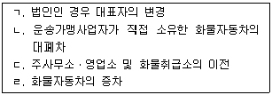
- ㄱ, ㄴ
- ㄴ, ㄷ
- ㄱ, ㄴ, ㄷ
- ㄱ, ㄷ, ㄹ
- ㄴ, ㄷ, ㄹ
(정답률: 49%)
63. 화물자동차 운수사업법령상 화물자동차 운송사업의 허가를 반드시 취소해야 하는 사유로 옳은 것은?
- 화물자동차 교통사고와 관련하여 거짓이나 그 밖의 부정한 방법으로 보험금을 청구하여 벌금형을 선고받고 그 형이 확정된 경우
- 법인이 아닌 화물운송사업자가 이 법을 위반하여 징역 이상의 실형을 선고받고 그 집행이 끝나거나(집행이 끝난 것으로 보는 경우를 포함한다) 집행이 면제된 날부터 2년이 지나지 아니한 경우
- 법인의 임원 중 파산선고를 받고 복권되지 아니한 자가 있는 때에 3개월 이내에 그 임원을 개임한 경우
- 부정한 방법으로 변경허가를 받거나 변경허가를 받지 아니하고 허가사항을 변경한 경우
- 중대한 교통사고 또는 빈번한 교통사고로 1명 이상의 사상자를 발생하게 한 경우
(정답률: 16%)
64. 화물자동차 운수사업법령상 운송사업자가 화물자동차 운송사업을 효율적으로 수행하기 위한 경영의 위탁에 관한 설명으로 옳지 않은 것은?
- 운송사업자는 위ㆍ수탁계약을 해지하려는 경우에는 위ㆍ수탁차주에게 2개월 이상의 유예기간을 두고 계약의 위반 사실을 구체적으로 밝히고 이를 시정하지 아니하면 그 계약을 해지한다는 사실을 서면으로 2회 이상 통지하여야 한다. 단, 대통령령으로 정하는 바에 따라 위ㆍ수탁계약을 지속하기 어려운 중대한 사유가 있는 경우에는 그러하지 아니하다.
- 국토교통부장관은 화물운송시장의 질서유지 및 운송사업자의 운송서비스 향상을 유도하기 위하여 필요한 경우 경영의 위탁을 제한할 수 있다.
- 위ㆍ수탁계약의 내용이 당사자 일방에게 현저하게 불공정한 경우로서 운송계약의 형태ㆍ내용 등 관련된 모든 사정에 비추어 계약체결 당시 예상하기 어려운 내용에 대하여 상대방에게 책임을 전가하는 경우에는 그 부분에 한정하여 무효로 한다.
- 국토교통부장관 또는 시ㆍ도지사는 위ㆍ수탁계약서의 작성 여부에 대한 실태 조사를 격년으로 실시한다.
- 운송사업자가 위ㆍ수탁 계약의 갱신 요구를 거절하는 경우에는 그 요구를 받은 날부터 15일 이내에 위ㆍ수탁차주에게 거절 사유를 적어 서면으로 통지하여야 한다.
(정답률: 58%)
65. 화물자동차 운수사업법령상 인ㆍ허가에 관한 사항으로 옳지 않은 것은? (단, 권한위임에 관한 규정은 고려하지 않음)
- 화물자동차 운송사업을 경영하려는 자는 국토교통부장관의 허가를 받아야 한다. 다만, 화물자동차 운송가맹사업의 허가를 받은 자는 그러하지 아니하다.
- 화물자동차 운송주선사업을 경영하려는 자는 국토교통부장관의 허가를 받아야 한다. 다만, 화물자동차 운송가맹사업의 허가를 받은 자는 그러하지 아니하다.
- 국제물류주선업을 경영하려는 자는 국토교통부장관의 허가를 받아야 한다.
- 화물자동차 운송가맹사업을 경영하려는 자는 국토교통부장관의 허가를 받아야 한다.
- 운수사업자는 국토교통부장관의 인가를 받아 업종별로 공제조합을 설립할 수 있다.
(정답률: 59%)
66. 화물자동차 운수사업법령상 화물자동차 운송사업과 화물자동차 운송가맹사업에 이용되지 아니하고 자가용으로 사용되는 '자가용 화물자동차'의 사용에 관한 설명으로 옳지 않은 것은?
- 자가용 화물자동차의 사용을 신고하려는 자는 「자동차관리법」에 따라 자동차 등록을 신청할 때에 자가용 화물자동차 사용신고서를 시ㆍ도지사에게 제출하여야 한다.
- 자가용 화물자동차 사용신고확인증을 발급받은 자는 차고시설을 변경하였을 때에는 변경한 날부터 30일 이내에 변경신고서를 시ㆍ도지사에게 제출하여야 한다.
- 자가용 화물자동차 사용신고서에는 차고시설(임대 차고를 포함한다)을 확보하였음을 증명하는 서류를 첨부하여야 한다.
- 시ㆍ도지사는 자가용 화물자동차의 소유자 또는 사용자가 자가용 화물자동차를 사용하여 화물자동차 운송사업을 경영한 경우 6개월 이내의 기간을 정하여 그 자동차의 사용을 제한하거나 금지할 수 있다.
- 자가용 화물자동차의 소유자 또는 사용자가 유상운송의 금지의무를 위반하여 자가용 화물자동차를 유상으로 화물운송용으로 제공하거나 임대한 자는 2년 이하의 징역 또는 2천만원 이하의 벌금에 처한다.
(정답률: 20%)
67. 유통산업발전법령상 공동집배송센터에 관한 설명으로 옳지 않은 것은?
- 산업통상자원부장관은 물류공동화를 촉진하기 위하여, 지정한 공동집배송센터의 조성에 필요한 자금 등을 지원할 수 있다.
- 산업통상자원부장관은 유통기능을 효율화하기 위하여 공동집배송센터의 확충 및 효율적 배치에 관한 시책을 마련하여야 한다.
- 산업통상자원부장관은 공동집배송센터를 지정하거나 변경지정하려면 미리 관계 중앙행정기관의 장과 협의하여야 한다.
- 공동집배송센터의 지정을 받으려는 자는 공동집배송센터의 조성ㆍ운영에 관한 사업계획을 첨부하여 산업통상자원부장관에게 센터 지정을 신청하여야 한다.
- 공동집배송센터사업자가 공동집배송센터를 신탁개발하는 경우 계약체결일부터 14일 이내에 신탁계약서 사본을 산업통상자원부장관에게 제출하여야 한다.
(정답률: 38%)
68. 유통산업발전법령상 상점가의 진흥을 위하여 결성하는 상점가진흥조합에 관한 설명으로 옳은 것은?
- 도ㆍ소매업을 영위하는 자에 한하여 상점가진흥조합을 결성할 수 있다.
- 상점가진흥조합의 조합원은 「중소기업기본법」제2조의 규정에 의한 중소기업자가 전체의 5분의 4 이상 되어야 한다.
- 상점가진흥조합의 구역은 다른 상점가진흥조합의 구역과 중복되어서는 아니 된다.
- 상점가진흥조합은 조합원의 자격이 있는 자 중 같은 업종을 경영하는 자가 3분의 1인 경우에는 그 같은 업종을 경영하는 자의 5분의 3 이상의 동의를 받아 결성할 수 있다.
- 상점가진흥조합은 산업통산부장관의 설립인가를 받아 그 주된 사무소의 소재지에서 설립등기를 함으로써 성립한다.
(정답률: 44%)
69. 유통산업발전법령상 대규모점포등에 대한 영업시간 제한 및 의무휴업일 지정에 관한 설명으로 옳지 않은 것은? (단, 연간 총매출액 중 「농수산물 유통 및 가격 안정에 관한 법률」에 따른 농수산물의 매출액 비중이 55퍼센트 이상인 대규모 점포등으로서 해당 지방자치단체의 조례로 정하는 대규모점포등은 제외)
- 특별자치시장ㆍ시장ㆍ군수ㆍ구청장은 매월 이틀을 의무휴업일로 지정하여야 한다.
- 영업시간 제한 및 의무휴업일 지정의 대상은 대형마트로 등록된 대규모점포에 한한다.
- 영업시간 제한 및 의무휴업일 지정에 필요한 사항은 해당 지방자치단체의 조례로 정한다.
- 특별자치시장ㆍ시장ㆍ군수ㆍ구청장은 오전 0시부터 오전 10시까지의 범위에서 영업시간을 제한할 수 있다.
- 영업시간 제한을 1년 이내에 3회 이상 위반하여 영업제한시간에 영업을 한 자, 또는 지정된 의무휴업일을 1년 이내에 3회 이상 위반하여 의무휴업일에 영업을 한 자에 대하여는 특별자치시장ㆍ시장ㆍ군수ㆍ구청장이 1개월 이내의 기간을 정하여 영업정지를 명할 수 있다. 이 경우 각각의 명령위반 횟수는 합산한다.
(정답률: 49%)
70. 유통산업발전법령상 시ㆍ도지사가 유통산업발전 기본계획 및 시행계획에 따라 수립ㆍ시행하는 지역별 시행계획에 포함되어야 할 사항이 아닌 것은?
- 지역유통산업 발전의 기본방향
- 지역유통산업의 종류별 발전 방안
- 지역유통기능의 효율화ㆍ고도화 방안
- 유통전문인력ㆍ부지 및 시설 등의 수급 방안
- 대규모점포와 지역 중소유통기업 및 중소제조업체 사이의 건전한 상거래질서의 유지 방안
(정답률: 38%)
71. 유통산업발전법령상 등록된 대규모점포등과 중소제조업체 사이의 영업활동에 관한 유통분쟁조정에 관한 설명으로 옳은 것은?
- 당사자가 조정안을 수락하면 재판상 화해가 성립된 것으로 본다.
- 대규모점포등과 관련된「독점규제 및 공정거래에 관한 법률」을 적용받는 사항의 조정을 원하는 자는 특별자치시ㆍ시(「제주특별자치도 설치 및 국제자유도시 조성을 위한 특별법」제10조 제2항에 따른 행정시를 포함한다. 이하 같다)ㆍ군ㆍ구의 유통분쟁조정위원회에 분쟁의 조정을 신청할 수 있다.
- 당사자가 조정안을 수락하였을 때에는 유통분쟁조정위원회는 즉시 조정서를 작성하여야 하며, 위원장 및 각 위원이 조정서에 기명날인 또는 서명함으로써 효력이 발생한다.
- 특별자치시ㆍ시ㆍ군ㆍ구의 유통분쟁조정위원회는 조정신청을 받은 날부터 60일 이내에 이를 심사하여 조정안을 작성하여야 하나, 부득이한 사정이 있는 경우에는 위원회의 의결로 그 기간을 연장할 수 있다.
- 시(특별자치시는 제외한다)ㆍ군ㆍ구의 유통분쟁조정위원회의 조정안에 불복하는 자는 조정안을 제시받은 날부터 30일 이내에 특별시ㆍ광역시ㆍ특별자치시ㆍ도ㆍ특별자치도의 위원회에 조정을 신청할 수 있다.
(정답률: 31%)
72. 유통산업발전법령상 대규모점포등개설자의 지위승계에 관한 설명으로 옳지 않은 것을 모두 고른 것은?
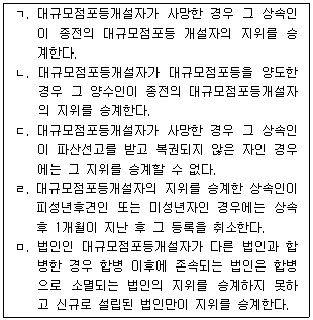
- ㄱ, ㄴ, ㄷ
- ㄱ, ㄹ, ㅁ
- ㄴ, ㄷ, ㄹ
- ㄴ, ㄷ, ㅁ
- ㄷ, ㄹ, ㅁ
(정답률: 43%)
73. 농수산물 유통 및 가격안정에 관한 법령상 민영도매시장에 관한 설명으로 옳지 않은 것은?
- 민간인등이 특별시ㆍ광역시ㆍ특별자치시ㆍ특별자치도 또는 시 지역에 민영도매시장을 개설하려면 시ㆍ도지사의 허가를 받아야 한다.
- 민영도매시장에서 매매참가인의 업무를 하려는 자는 민영도매시장의 개설자에게 매매참가인으로 신고하여야 한다.
- 민영도매시장을 개설하려는 장소가 교통체증을 유발할 수 있는 위치에 있는 경우 시ㆍ도지사는 허가하지 않을 수 있다.
- 「농수산물 유통 및 가격안정에 관한 법률」에 따른 민영도매시장에 대하여는 「유통산업발전법」의 규정을 적용하지 아니한다.
- 민영도매시장의 시장도매인은 농수산물을 매수 또는 위탁받아 도매하거나 매매를 중개하는 영업을 하는 법인으로 농림축산식품부장관 또는 해양수산부장관이 지정한다.
(정답률: 15%)
74. 농수산물 유통 및 가격안정에 관한 법령상 농산물(축산물 및 임산물을 포함)의 원활한 수급과 가격안정을 도모하고 유통구조의 개선을 촉진하기 위하여 설치한 농산물가격안정기금에서 지출할 수 있는 대상사업에 해당하지 않는 것은?
- 식량작물과 축산물의 유통구조 개선을 위한 생산자의 공동이용시설에 대한 지원
- 종자산업의 진흥과 관련된 우수 종자의 품종육성ㆍ개발, 우수 유전자원의 수집 및 조사ㆍ연구
- 농산물의 가공ㆍ포장 및 저장기술의 개발, 브랜드 육성, 저온유통, 유통정보화 및 물류 표준화의 촉진
- 농산물의 유통구조 개선 및 가격안정사업과 관련된 조사ㆍ연구ㆍ홍보ㆍ지도ㆍ교육훈련 및 해외시장개척
- 농산물 가격안정을 위한 안전성 강화와 관련된 조사ㆍ연구ㆍ홍보ㆍ지도ㆍ교육훈련 및 검사ㆍ분석시설 지원
(정답률: 28%)
75. 항만운송사업법령상 검수사업ㆍ감정사업 및 검량사업의 등록기준에 관한 설명으로 옳은 것은?
- 1급지인 광양항의 검수사의 수는 7명 이상이어야 한다.
- 2급지인 마산항의 검수사의 수는 2명 이상이어야 한다.
- 3급지인 대천항의 검수사의 수는 1명 이상이어야 한다.
- 감정사업의 등록을 위한 감정사의 수는 3명 이상이어야 한다.
- 검량사업의 등록을 위한 검량사의 수는 2명 이상이어야 한다.
(정답률: 27%)
76. 항만운송사업법령상 해양수산부장관이 사업정지처분에 갈음하여 부과할 수 있는 과징금에 관한 설명으로 옳지 않은 것은? (단, 권한위임에 관한 규정은 고려하지 않음)
- 해양수산부장관은 항만운송사업자 또는 항만운송관련사업자에게 사업정지처분을 하여야 하는 경우로서 그 사업의 정지가 그 사업의 이용자 등에게 심한 불편을 주거나 공익을 해칠 우려가 있는 경우에는 사업정지처분을 갈음하여 500만원 이하의 과징금을 부과할 수 있다.
- 해양수산부장관은 과징금을 내야 할 자가 납부기한까지 과징금을 내지 아니하면 국세 체납처분의 예에 따라 징수한다.
- 해양수산부장관은 과징금을 부과하려는 경우에는 위반행위의 종류와 과징금의 금액 등을 구체적으로 밝혀 이를 낼 것을 서면으로 통지하여야 한다.
- 과징금 통지를 받은 자는 천재지변 등 부득이한 사유가 없는 경우에는 통지를 받은 날부터 30일 이내에 과징금을 해양수산부장관이 정하는 수납기관에 내야 한다.
- 과징금은 분할하여 낼 수 없다.
(정답률: 50%)
77. 항만운송사업법령상 항만운송관련사업에 관한 설명으로 ( ) 안에 들어갈 내용을 바르게 나열한 것은? (단, 권한위임에 관한 규정은 고려하지 않음)
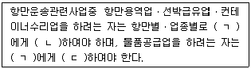
- ㄱ: 해양수산부장관, ㄴ: 등록, ㄷ: 신고
- ㄱ: 해양수산부장관, ㄴ: 신고, ㄷ: 등록
- ㄱ: 지방해양항만청장, ㄴ: 등록, ㄷ: 신고
- ㄱ: 지방해양항만청장, ㄴ: 신고, ㄷ: 등록
- ㄱ: 국토교통부장관, ㄴ: 신고, ㄷ: 등록
(정답률: 16%)
78. 철도사업법령상 다른 사람의 수요에 따른 영업을 목적으로 하지 아니하고 자신의 수요에 따라 특수 목적을 수행하기 위하여 설치하거나 운영하는 전용철도의 등록 취소ㆍ정지에 관한 설명으로 ( ) 안에 들어갈 내용을 바르게 나열한 것은?
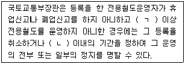
- ㄱ: 7일, ㄴ: 30일
- ㄱ: 14일, ㄴ: 60일
- ㄱ: 30일, ㄴ: 3개월
- ㄱ: 60일, ㄴ: 6개월
- ㄱ: 3개월, ㄴ: 1년
(정답률: 38%)
79. 철도사업법령상 점용허가를 받은 자가 납부해야 할 점용료에 관한 설명으로 옳지 않은 것은?
- 점용허가를 받은 자는 국토교통부장관에게 점용료를 내야 한다.
- 점용허가를 할 철도시설의 가액은 「국유재산법 시행령」을 준용하여 산출하되, 당해 철도시설의 가액은 산출 후 1년 이내에 한하여 적용한다.
- 점용료는 점용허가를 할 철도시설의 가액과 점용허가를 받아 행하는 사업의 매출액을 기준으로 하여 산출하되, 구체적인 점용료 산정기준에 대하여는 국토교통부장관이 정한다.
- 국토교통부장관은 점용허가를 받은 자가 점용료를 내지 아니하면 국세 체납처분의 예에 따라 징수한다.
- 점용료는 매년 1월말까지 당해연도 해당분을 선납하되, 국토교통부장관이 부득이한 사유로 선납이 곤란하다고 인정하는 경우에는 그 납부기한을 따로 정할 수 있다.
(정답률: 46%)
80. 철도사업법령상 철도서비스의 품질평가 및 우수철도서비스 인증절차에 관한 설명으로 옳지 않은 것은?
- 국토교통부장관은 공공복리의 증진과 철도서비스 이용자의 권익보호를 위하여 철도사업자가 제공하는 철도서비스에 대하여 적정한 철도서비스 기준을 정하고, 그에 따라 철도사업자가 제공하는 철도서비스의 품질을 평가하여야 한다.
- 국토교통부장관은 철도사업자에 대하여 3년마다 철도서비스의 품질평가를 실시하여야 하나, 국토교통부장관이 필요하다고 인정하는 경우에는 수시로 품질평가를 실시할 수 있다.
- 국토교통부장관은 품질평가를 하고자 하는 경우 품질평가를 개시하는 날 2주 전까지 철도사업자에게 품질평가실시계획, 품질평가의 기간 등을 통보하여야 한다.
- 국토교통부장관은 품질평가를 실시하고자 하는 때에는 철도서비스 기준의 세부내역, 품질평가의 항목 등이 포함된 철도서비스품질평가실시계획을 수립하여야 한다.
- 국토교통부장관은 품질평가결과가 우수한 철도서비스에 대하여 직권으로 또는 철도사업자의 신청에 의하여 우수철도서비스에 대한 인증을 할 수 있다.
(정답률: 49%)